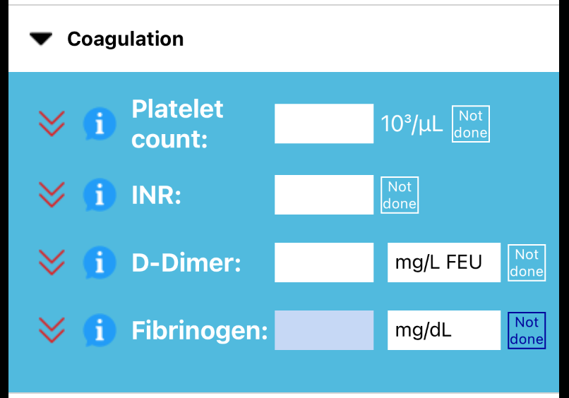
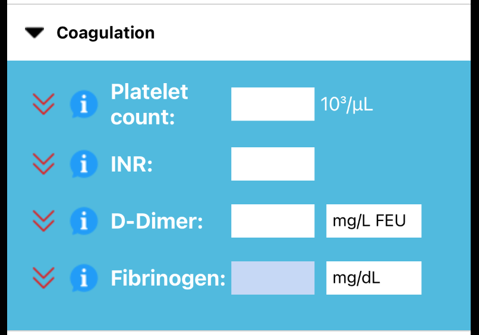

Available?

disabled_by_default
select_check_box
select_check_box
select_check_box
Candidate icons:
- Pair not available/available: disabled_by_default select_check_box
- Not available: do_not_disturb_on_total_silence
- Not available: indeterminate_check_box
- Not available: block
- Pair not available/available: cancel check_circle